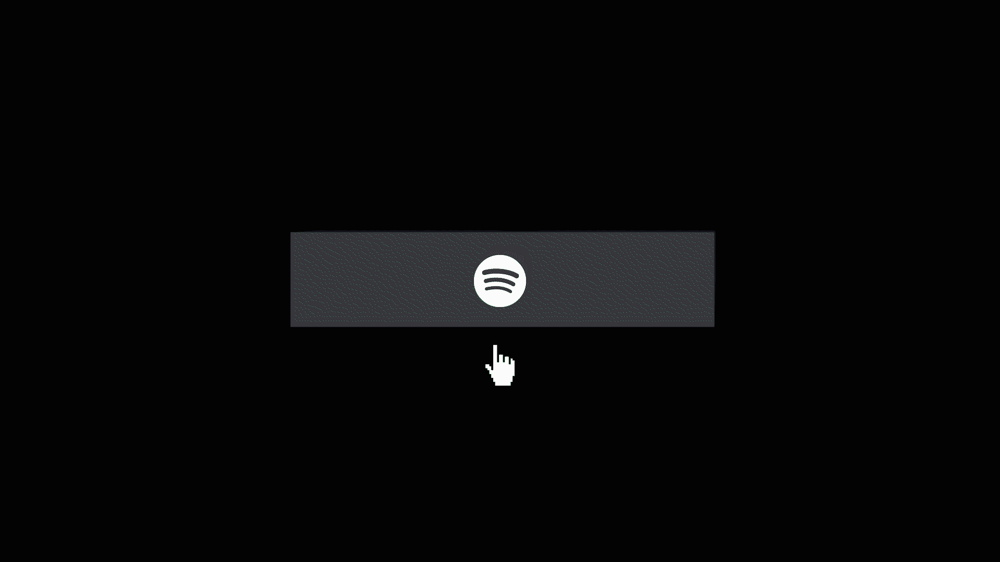

CASE STUDY
OVERVIEW
In a timeline of roughly nine weeks, I was challenged with designing and developing three fully responsive microinteractions (simple, medium, and complex) for "IDM 241: Microinteractions" at Drexel University, with the intent of incorporating them into full-fledged project(s) down the road. In my case, I would be adding them to my personal portfolio website using HTML, CSS, and JavaScript.
CONTEXT & CHALLENGE
The goal of this project was to develop predictive and enjoyable interactive designs based on the consideration of users’ experience. We were tasked with identifying and implementing the elements required to create memorable digital experiences. We were free to choose the original interface we wanted to improve, and the type of interaction we wanted to occur based on the Microinteracions Model:
- a Trigger
- the Rules
- Feedback
- Loops/Modes
PROCESS
My personal portfolio website contatins buttons and links to my social media profiles, however they have very minimal feedback to user as of now.
The first microinteraction – Alpha:
- The trigger: occurs when the user hovers over the social media icons in the "Connect With Me" section at the bottom of the website.
- The rules: on each hover, the social media icon will change color along with an animation. The animation will fade in a cirlce around the icon.
- The feedback: hovering over each logo will change the color of the icon from white to its respective design color and show a small animation: a circle will fade in and around the icon.
- The loops/modes: mode – clicking one one of these logos will open a new tab and bring you to that specific link.
PROCESS: IMAGES
Alpha Microinteraction Original Alpha Microinteraction Redesign
Alpha Microinteraction Redesign
The aim behind this interaction was to enhance the experience behind hovering these icons and visually show the user where it will take them, based off of familiar color palettes.
You can visit a build of the microinteraction below:
Alpha BuildPROCESS (CONT.)
The second microinteraction – Beta:
- The trigger: occurs when the user hovers over the social media buttons in the "Portfolio" card section towards the top of the website.
- The rules: on each hover, the social media icon will change color along with a few animations:
- One animation will have the name of the app slide in from the right and line up next to the logo when you hover over the button.
- The next animation will shake the logo and name after the slide animation.
- The next animation will fade the logo color from white to the corresponding color palette of the app.
- The last animation will fade in a colored border around the box, also following the color palette of the app.
- The feedback: upon hovering over each button box:
- the name of the app will slide in from right side of the button and sit next to the app logo
- the color of the logo will change from white to its corresponding color palette
- a colored border, also corresponding to the color palette of the app, will appear around the outer edge of the button
- The loops/modes: mode – clicking one one of these logos will open a new tab and bring you to that specific link.
PROCESS: IMAGES
Beta Microinteraction Original  Beta Microinteraction RedesignThis interaction was also focused on enhancing the experience behind hovering these icons and visually show the user where it will take them, based off of familiar color palettes and a playful animation.
You can visit a build of the microinteraction below:
Beta BuildPROCESS (CONT.)
The third microinteraction – Final:
- The trigger:
- The first trigger will occur when the user clicks the 3-lined hamburger icon ☰ in the top left corner of the website (to be added).
- An additional trigger will occur when the user hovers over one of the navigtion menu items.
- The rules:
- On click, the hamburger icon ☰ will transform into an ✕ with the middle line fading out and the top and bottom lines converging into an ✕ shape.
- After clicking the hamburger icon, the navigation menu will slide in from the left of the screen.
- Hovering over any of these navigation items will change the color to a blue hover state color and scale the text up 30% and return back to its orignal state after the un-hovering.
- The feedback:
- the ☰ icon will transform into an ✕
- a navigation menu will slide in from the left
- 6 navigation menu items will slide in with the menu
- the text will scale up 30% and then return back its original size after mouse click ends
- The loops/modes: mode – clicking one of the menu items will close the nagivation panel and jump to that section in the webpage.
In this navigation menu will be 6 items: About Me, Portfolio, Digital Media, Short Films, Photography, and Contact. Clicking one of the menu items will close the menu and jump to that section in the webpage.
Upon clicking the hamburger icon:
Upon hover of the menu item: the color will change from white to blue
PROCESS: IMAGES
 Final Microinteraction Original
Final Microinteraction Original
 Final Microinteraction Redesign
Final Microinteraction Redesign
The goal of adding a hamburger menu to my site was to create quick and easy navigation to get to the different sections, while retaining the layout and style of the site.
You can visit a build of the microinteraction below:
Final BuildSOLUTION
The goal of this project was to revamp the elements that already exist within my personal portfolio website by adding microinteractions that are engaging for the user and positively contribute to the look-and-feel of the website.
RESULTS
The designed microinteractions provide visual feedback that communicate and enhance the brand to the users, as well as allow for easier navigation of the site by getting to the areas of the page that matter most to the user.